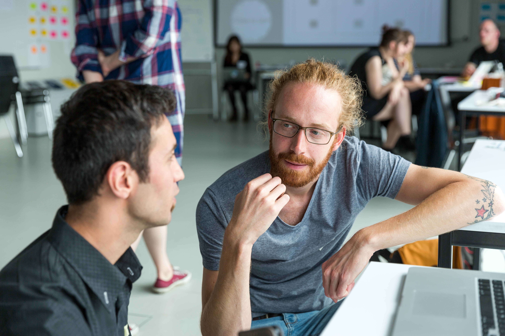
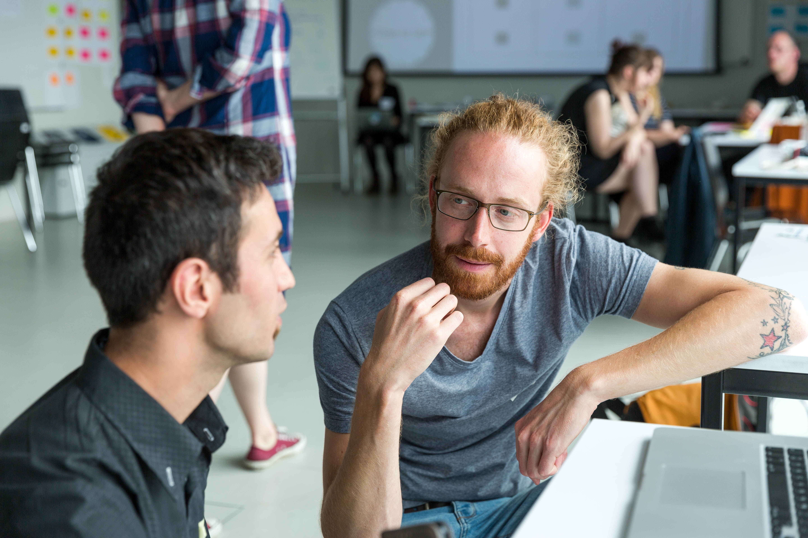

Wie kann Software dabei helfen, Sach- und Zeitspenden besser zu koordinieren? Wie kann neue Technologie dabei helfen den Asylprozess leichter zu verstehen? Wie kann die Kommunikation zwischen Geflüchteten und HelferInnen verbessert werden? - Diesen und weiteren Fragen haben wir uns im Rahmen der Digital Refugee Days gewidmet.
Bei den ‘Digital Refugee Days’ haben wir Menschen zusammengebracht, die in unterschiedlichen Kontexten mit Geflüchteten arbeiten oder selbst Geflüchtete sind. Wir wollten digitale Hilfsmittel und kreative Ansätze nutzen, um Hilfsorganisationen, Institutionen und Initiativen bei ihrer täglichen Arbeit und Geflüchtete in ihrem Alltag zu unterstützen. Dabei wollten wir das Rad nicht komplett neu erfinden, sondern auch auf vorhandene Projekte aufbauen und diese weiterentwickeln.
Unser Ziel ist es, die Zusammenarbeit zwischen technisch versierten Communities, Ehrenamtlichen im Bereich der Flüchtlingshilfe, Geflüchteten sowie öffentlichen Verwaltungen zu verstetigen und auszubauen. Zu unseren zwei Workshops haben wir UnterstützerInnen lokaler Flüchtlings-Initiativen, Geflüchtete, Mitarbeiter aus der städtischen Verwaltung sowie die Civic Tech Community eingeladen. In den Workshops haben wir das gegenseitige Kennenlernen untereinander und den Austausch von Erfahrungen und Problemen unterstützt. Wir haben gemeinsam spannende Problemstellungen identifiziert und konkrete Projektideen entwickelt. Im Fokus der Arbeit unsere Labs stand und steht ein nutzer- und problemorientiertes Vorgehen, d. h. wir versuchen die Anwendungen möglichst in enger Zusammenarbeit mit den späteren Nutzern zu entwickeln, um den Nutzen möglichst optimal auszuloten und anzupassen. Das ist natürlich manchmal schwieriger in der Praxis als in der Theorie ;)
Der Workshop-Auftakt fand am 22. Juni, einem ganz normalen Mittwoch Vormittag, statt. Die Hafen City Universität hatte uns einen Raum mit toller Sicht auf den Hafen zur Verfügung gestellt.
 


Mit rund 25 Teilnehmern aus verschiedenen Institutionen, Helferorganisationen, Behörde und Geflüchteten hatten wir ein bunte Mischung an Leuten, die genauso gespannt waren auf den Workshop-Tag wie wir.


Mit viel Engagement starteten die Teilnehmer in den Tag. Der Workshop war in verschiedene Teilbereiche untergliedert, die sich sehr an den Design Thinking Ansätzen orientierten. Moderiert wurde unser Workshop von Jana, Mitarbeiterin der Agentur 360innovation.
Da wir die Teilnehmer schon im Vorfeld gebeten hatten, uns ihre Projektideen zuzusenden bzw. vorbereitet zum Workshop zu erscheinen, konnten wir uns bereits binnen kurzer Zeit in verschiedene Projektgruppen einteilen.
Die interdisziplinären Gruppen arbeiteten in eigenregie an den verschiedenen Projekten, diskutierten Ideen und fanden so neue Inspirationen. Immer wieder stellten die Teilnehmer ihre Ergebnisse dem Plenum vor, sodass die Projekte auch in der ganzen Gruppe diskutiert werden konnten.
Nach einer kurzen Pause mit regionalem Fingerfood ging es dann in die letzte Workshop-Phase. Nach intensiven Diskussionen während der Pause kristallisierten sich vier Hauptprojekte heraus, wo die große Motivation der Teilnehmer bestand weiter an den Projekten zu arbeiten. Egal ob virtuelle digitale Karten oder Projektmanagementtools für Hilfsorganisationen – die Vielfalt der Projekte war beeindruckend!
Es ging am Ende des Workshops vor allem darum, nächste Schritte zu definieren und so einen weiteren Projektverlauf zu gewährleisten. Auch nach dem offiziellen Ende des Tages blieben noch einige Teilnehmer bei uns um weiter über Projekte zu sprechen aber auch einfach nur, um sich untereinander auszutauschen und zu vernetzen.
Der Tag war gefüllt von Motivation, Engagement, Offenheit und Begeisterung – wir hätten uns keinen besseren Workshop wünschen können.
Für unseren zweiten Workshop waren wir zu Gast beim Internationalen Sommerfestival auf Kampnagel. Da wir diesmal keinen ganzen Workshoptag zur Verfügung hatten, haben wir die Leute eingeladen mit uns über die Projekte aus dem ersten Workshop zu diskutieren und über ihre eigenen Erfahrungen zu dem Themenkomplex “Geflüchtete - Hilfsorganisationen - Webbasierte Lösungen” zu sprechen.  Es war wieder eine bunte Mischung an Teilnehmern, um die 20 Leute. Unter anderem viele ehrenamtlich Engagierte in der Flüchtlingshilfe und Interessierte, die über das Kampnagel-Programmheft eher zufällig zu uns gefunden haben.
Es war wieder eine bunte Mischung an Teilnehmern, um die 20 Leute. Unter anderem viele ehrenamtlich Engagierte in der Flüchtlingshilfe und Interessierte, die über das Kampnagel-Programmheft eher zufällig zu uns gefunden haben.
Als Grundlage der Diskussion haben wir die zwei erfolgreichsten (am ausgereiftesten) Projekte des ersten Workshops vorgestellt. Bei der Frage nach Feedback vom Publikum ist sofort eine lebhafte Diskussion entbrannt bei der wir ganz viele konstruktive Ideen erhalten haben und die Teilnehmer die Vor- und Nachteile von digitalen Lösungen in der Flüchtlingsthematik diskutiert haben. Beispielsweise war die Erfahrung, dass viele ältere Menschen sich engagieren, die aber eher schlecht per Internet zu erreichen sind. Eine andere Idee war, die Helfer-Plattform für Ehrenamtliche auch u. a. auf Arabisch und Farsi zu übersetzen, um Geflüchteten die Möglichkeit zu geben sich zu engagieren, z. B. solange sie noch keine Arbeitserlaubnis haben.
Unsere Diskussionsrunde war eigentlich viel zu schnell vorbei und wir haben sie in vielen angeregten Gesprächsgruppen gemütlich mit Wein und Snacks ausklingen lassen.
Weil jedes Bundesland, jede Uni und manchmal sogar jeder Studiengang andere Voraussetzungen und Regeln für den Studieneintritt haben, ist das Studiensystem nicht nur für Geflüchtete ziemlich verwirrend. Eine Art “Entscheidungsbaum” soll helfen, mithilfe von ein paar Fragen und Filtermöglichkeiten, den Geflüchteten individuell anzuzeigen, welche Studiengänge es wo gibt und welche Voraussetzungen und Dokumente sie mitbringen müssen. Außerdem soll es dort eine Kontaktmöglichkeit geben, die den zukünftigen Studenten weiter helfen kann.
Zielgruppe: Geflüchtete, die gerne in Deutschland studieren möchten
Die große Hamburger Organisation Hanseatic Help koordiniert viele Projekte und ehrenamtliche Helfer. Doch wie kann man die Fülle an Helferanfragen und Aufgaben besser zusammenbringen und organisieren? Wir basteln derzeit mit bestehenden Systemen ein starkes Webtool, dass sowohl ganz viel Management (Admin-Kram) kann, als auch ein schickes und einfach bedienbares Frontend für die Nutzer (die ehrenamtlichen Helfer) hat.
Zielgruppe: Hilfsorganisationen (z.B. Hanseatic Help) und freiwillige Helfer
Wer mehr wissen oder mitmachen möchte, schreibt uns einfach an lab@codeforhamburg.org. Wir feuen uns über jedes Feedback, jede Idee und helfende Hand :)
Die Digital Refugee Days waren ein großer Erfolg, mit vielen interessierten Teilnehmern und zwei Projekten, die nun weiter entwickelt werden! Wir wollen hier aber einmal kurz resümieren, was gut gelaufen ist und was wir nächstes Mal anders machen würden.
Unser Ziel war es, unter anderem, nutzerorientiert zu arbeiten. Unsere potenziellen Nutzer waren einerseits die Hilfsorganisationen, Helfer und Behördenmitarbeiter aber auch die Geflüchteten selbst. Nur wie bringt man diese Nutzer zusammen in einem relativ kurzen Workshop unter? Halten wir den Workshop auf Deutsch oder Englisch? Arbeiten wir mit Übersetzern? Wann halten wir den Workshop ab, damit möglichst alle Nutzergruppen Zeit haben (v.a. im Hinblick auf die Behörde)? Über diese Fragen haben wir viel diskutiert und am Ende entschieden den Workshop an einem Vormittag unter der Woche auf Deutsch zu halten mit der Option für englische Übersetzung.
Wie erreicht man die Nutzergruppen überhaupt? Das war unsere erste Hürde. Hilfsorganisationen waren relativ leicht von dem Workshop zu begeistern; bei den verschiedenen Behörden gestaltete sich das etwas schwieriger, da die Mitarbeiter sehr viel zu tun haben und wenig Zeit für außerbehördliche Termine abgeben können. Durch die sprachliche Hürde war es auch schwieriger Geflüchtete für den Workshop zu gewinnen, da sie auf jeden Fall Englisch sprechen mussten. Wie integrativ war unser Workshop wirklich? Aus Zeit- und Ressourcengründen (immerhin haben wir das alles ehrenamtlich neben Studium und Arbeit organisiert) konnten wir uns leider nicht noch weiter dahinter haken, gezielt noch mehr Geflüchtete für den Workshop zu gewinnen. Das hat uns natürlich in die Situation gebracht, dass wir teilweise nicht nutzerorientiert arbeiten konnten, weil unsere Zielgruppe gar nicht vertreten war. Deshalb möchten wir ein Treffen mit Geflüchteten initiieren, um über ihre und unsere Ideen und Projekte gemeinsam zu disktutieren. Sie konkret befragen, was ihre Bedürfnisse und Wünsche sind; und ihnen die Möglichkeit anbieten mitzumachen und programmieren zu lernen.
Unser zweiter Workshop, den wir ja als Feedback- und Diskussionrunde angelegt hatten, war eine sehr große Bereicherung für die Strukturierung unserer Gedanken und das Weiterentwickeln der Projekte. Anstatt einen zweiten vollwertigen Workshop zu halten, der noch mehr Projekte und Prototypen - aber auch den Bedarf nach Arbeitskapazität - hervorbringen würde, haben wir uns auf die Laufenden konzentriert und weiter entwickelt.
Fazit: Wir hatten und haben sehr viel Spaß an den Workshops, der Zusammenarbeit mit so vielen kreativen Köpfen und den tollen Projekten, die sich langsam aus ihrer Ideenphase in die Umsetzungsphase entwickeln. Alles in allem hoffen wir, dass alle Teilnehmer auch so viel gelernt und mitgenommen haben wie wir!
Gefördert wurde das Projekt durch die Bundeszentrale für Politische Bildung und initiiert durch die Open Knowledge Foundation Deutschland.
Außerdem bedanken wir uns herzlich bei der Hafencity Universität und Kampnagel für die tollen Räume in denen wir unserer Kreativität freien Lauf lassen konnten. Sowie Lemonaid, die uns beim ersten Workshop mit einer Ladung Limo erfrischt haben und Jan Brinkmann der das Ganze fotografisch ganz toll festgehalten hat! Nicht zu vergessen natürlich die fleißigen Helfer von Code for Hamburg :)
Wir sind eine Gruppe Ehrenamtlicher im Code for Hamburg Lab, das Teil des bundesweiten Code for Germany Netzwerkes ist. Code for Germany gehört zur Open Knowledge Foundation Deutschland und ist ein Netzwerk aus Ehrenamtlichen, die ihre Fähigkeiten im Bereich Softwareentwicklung, Design, Stadtplanung, Kommunikation uvm. für ihre Städte und Nachbarschaft einsetzen.
Projektverantwortliche: Alina, Vera, Timo und Solveig, mit ganz viel Unterstützung aus dem Code for Hamburg Team!
Weitere Infos zum Projekt 'Digital Refugee Labs' findet ihr unter:
codefor.de/digitalrefugeelabs Newsletter PDF DokumentBei Interesse schreib uns am besten hier:
lab@codeforhamburg.org